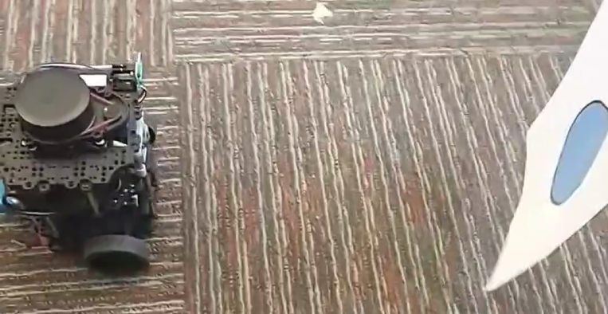

PID-Controlled Object Chaser
For a lab project as part of my Robotics Master's degree at Georgia Institute of Technology, a codebase was developed to interface with the open-source TurtleBot3 Burger.
Using ROS2, the goal of the project was to enable the robot to detect a specific object and autonomously follow it as it moves. The system combined computer vision techniques with PID controllers to accomplish this task. Three ROS2 nodes were developed: the detect_object node, get_object_range node, and chase_object node.

The detect_object node subscribed to the Raspberry Pi camera topic and applied computer vision techniques such as masking, erosion, and dilation to identify a blue ball in the image frame. The center of the object was determined in pixel space and published to the get_object_range node.
The get_object_range node subscribed to the detect_object node and received the object's pixel coordinates. Using the camera's intrinsic parameters, it converted pixel values into angular measurements (degrees/radians) and mapped this position to a corresponding angle on the robot's 360-degree LiDAR. It then queried the /scan topic to obtain the object's distance and published both the angular position and range to the chase_object node.
The chase_object node subscribed to the get_object_range node and used the object's angular position and distance to control the robot. Two PID (proportional, integral, derivative) controllers were implemented: one for linear control to maintain a set distance from the object, and one for angular control to keep the robot oriented toward it. These controllers generated linear and angular velocity commands, which were published to the /cmd_vel topic to drive the robot's motion.
- ROS2 (multi-node architecture, topics, publishers/subscribers)
- Computer vision (color-based object detection)
- Sensor fusion (camera + LiDAR)
- Coordinate transformations (pixel space → angular space)
- PID control systems (linear and angular control)
- Real-time feedback control loops
- Mobile robot kinematics and motion control
- Embedded systems and Linux-based robotics
Current Location
North of Atlanta, GAUnited States of America